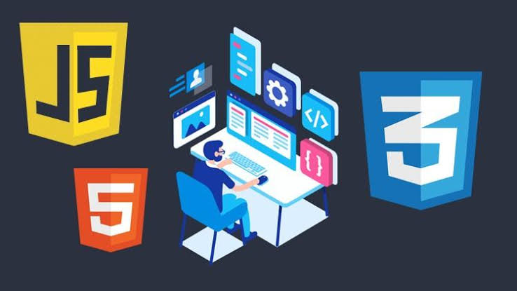
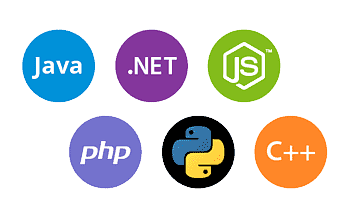

Desenvolvimento Web

Desenvolvimento web é o termo utilizado para descrever o desenvolvimento de sites, na Internet ou numa intranet. O profissional que trabalha desenvolvendo websites pode ser um web designer (desenvolvedor do layout) ou um web developer (desenvolvedor de sistemas). O desenvolvimento refere-se a um processo de construção e testes do software especifico para a web, com a finalidade de se obter um conjunto de programas, que satisfazem as funções pretendidas, quer em termos de usabilidade dos usuários ou compatibilidade com outros programas existentes. O desenvolvimento web pode variar desde simples páginas estáticas a aplicações ricas, comércios eletrônicos ou redes sociais.
Front-End
Podemos classificar como a parte visual de um site, aquilo que conseguimos interagir. Quem trabalha com Front End é responsável por desenvolver por meio do código uma interface gráfica e, normalmente, com as tecnologias base da Web: HTML, CSS e JavaScript.

Back-End
O Back-End trabalha em boa parte dos casos fazendo a ponte entre os dados que vem do navegador rumo ao banco de dados e vice-versa, sempre aplicando as devidas regras de negócio, validações e garantias num ambiente restrito ao usuário final (ou seja, onde ele não consegue acessar ou manipular algo).
Full-Stack
Full Stack é um termo usado para se referir a um desenvolvedor que é bom em fazer tanto a parte do visual e da interação do usuário em um site ou aplicativo (o frontend) quanto a parte de armazenamento e processamento de informações no servidor (o backend). Em outras palavras, ele é um faz-tudo, que consegue cuidar de toda a parte técnica do desenvolvimento de um projeto. Ser um desenvolvedor Full Stack requer conhecimentos em várias áreas diferentes, como linguagens de programação, bancos de dados e servidores, e isso pode ser muito útil para projetos de qualquer tamanho.